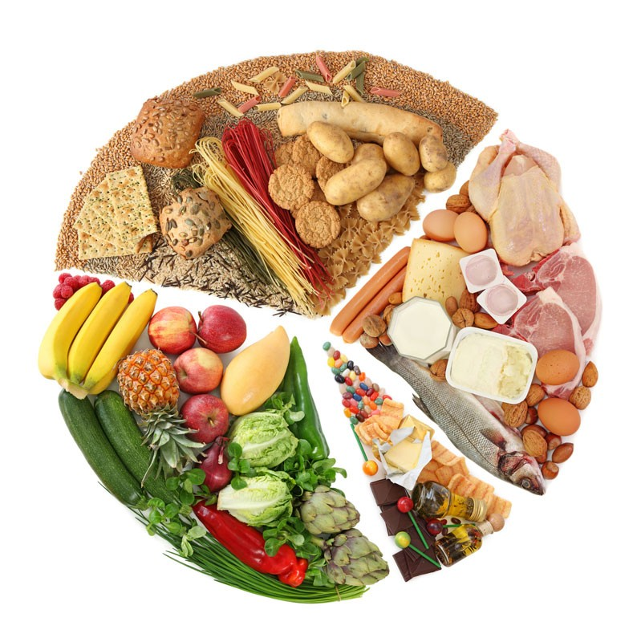

Pour une bonne santé, se faire plaisir et mieux vivre, il faut savoir adapter son alimentation.
car on dépense plus de calories pour trois repas que pour un seul ou deux. En effet à chaque repas, des calories sont brûlées pour assurer la digestion. De plus, votre corps pourrait vous faire payer très cher le manque …
à toutes heures et si vous avez un petit creux, consommez 1 produit laitier allégé ou croquez une pomme. Mais surtout, évitez toutes sortes d’aliments déconseillés.
préférez une salade composée, un simple hamburger accompagné d’une bouteille d’eau ou une boisson light. Evitez les boissons sucrées les frites et les desserts.
Mangez léger au repas suivant (une soupe ou des légumes crus ou cuits, des produits laitiers maigres et éventuellement un fruit.
ne reprenez jamais d’un plat. Mangez lentement en mâchant bien pour que le cerveau ait le temps d’analyser le contenu de votre estomac et d’envoyer des messages
choisissez des aliments allégés en graisse et évitez absolument tout ce qui est cuit ou revenu dans un corps gras. Faites cuire vos aliments au gril, à la vapeur. Salez légèrement l’eau de cuisson mais ne resalez ensuite.
citron, vinaigre, poivre, herbe fraîche, aromates et épices pour rehausser le goût de vos aliments.
1 crudité (légumes cuits ou cru) et 1 produit laitier par repas. On aura au total 3 produits laitiers et 3 crudités minimum par jour.
• Pratiquez une activité physique suivie : ce qui vous aidera à perdre du poids. • Buvez de l’eau plate régulièrement tout au long de la journée, en petite quantité.
©copyright myproject-2020